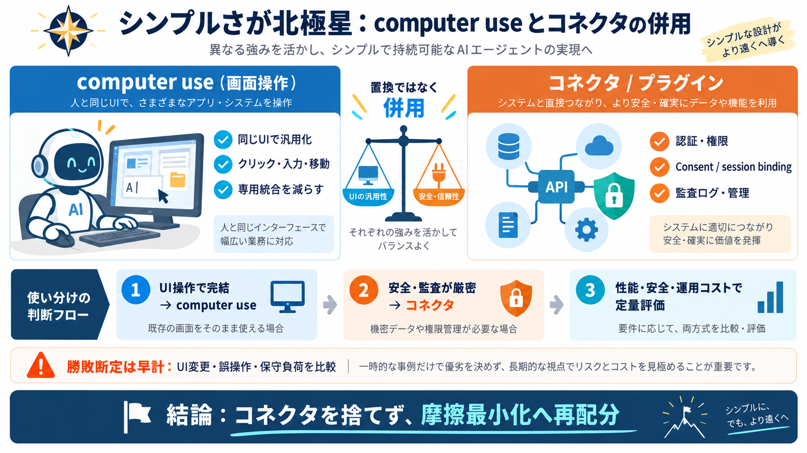

AI agents / 連携
02 / 14
シンプルさが北極星
computer useで
統一
？
Greg Brockmanは、AIエージェントの連携を「コネクタ地獄」ではなく、 画面操作で統一する
computer use
の方向性を語りました。
主役
AIエージェント（指示→作業実行）
対立軸
コネクタ統合 vs computer use（画面・入力）
problem / 摩擦
03 / 14
コネクタ増殖の痛み
専用統合
が増える
サービスごとにMCP/CLI/API/プラグイン等を用意すると、接続先が増えるほど管理コスト・保守負荷が膨らみます。
例（コネクタ）
MCPサーバー / CLI / API / プラグイン
増える負債
互換性維持・認証・監査・運用手順
metaphor / 共通経路
04 / 14
同じUIで動かす
画面操作で
汎用化
computer useは、画面・キーボード・マウスのような人間と同じ経路で実行することで、 サービス固有の統合を減らせる可能性があります（汎用性：汎化）です。
入力
画面/キーボード/マウス
出力
クリック・入力・移動
狙い
専用コネクタの削減
architecture / 北極星
05 / 14
“retooling”への違和感
統合を
作り替える
ブロックマンは、AIエージェント向けにソフトウェアを作り直して統合を増やすことを、 「人間向けではない不自然な手段」と捉えています。
本質
技術ではなく開発/運用の摩擦最小化
理想
AIが人間同様に直感的に働く世界
evidence / 産業の現実
06 / 14
“統合インフラ”は残る
AWSも
コネクタ
投資
AWSはBedrock AgentCoreの一部として、外部ツール接続のゲートウェイを管理し、 Consent（同意）やsession binding（セッション結合）を安全に扱う仕組みを提供しています。
提供例
AgentCore + ゲートウェイ管理
安全要件
Consent / session binding / 管理者設定
distinction / なぜ消えない
07 / 14
安全と確実性
コネクタは
ガバナンス
に強い
認証・権限・監査・セッション制御は、画面操作だけで同等に実装するのが難しい場合があります。 そのためコネクタは運用・ガバナンス上の役割を持ち続けます。
得意
同意ポータル、認証連携、監査ログ
難所
screen-onlyでの厳密な統制設計
comparison / 並走
08 / 14
置換ではなく併用
computer use vs
プラグイン
記事の文脈では、完全に置き換わるより「最適解が要件で分かれる」段階です。 ブラウザ拡張のような実行も進みつつ、Slack/Gmail/GitHub直結は優先ルートになり得ます。
computer useの強み
汎用性：統合を減らす可能性
コネクタ/プラグインの強み
直接呼び出しで確実性・効率
enumeration / 重要論点
09 / 14
記事が言う“核心”
4つの論点
記事の焦点は、(i) 設計の北極星、(ii) 専用統合の削減可能性、(iii) 消えない安全要件、(iv) まだ残る最適局面です。
i. 北極星
シンプルさ（開発/運用の摩擦最小化）
ii. 削減
クリック/入力など“日常作業”を自動化
iii. 不滅
認証・同意・監査・セッション制御
iv. 併用
Slack/Gmail/GitHubはプラグインが有利な局面
process / 検討の軸
10 / 14
要件→選択へ
どっちを
使う
？
方向性を意思決定に落とすには、「どのタスクはcomputer useが適し、どれはコネクタが必須か」を 安全・運用・コストの観点で切り分ける必要があります。
computer useが向く
UI操作で完結しやすい作業（汎用化しやすい）
コネクタが向く
認証/監査/権限が厳密に必要な連携
distinction / リスク比較
11 / 14
“検証不足”が残る
比較には
指標
が要る
画面操作はUI変更耐性、失敗時の復元性、権限境界、監査ログ、コスト（推論/実行）などで比較が必要です。 現時点の情報だけでは勝敗断定は早計だとされています。
computer use
誤操作・UI変更の挙動差
コネクタ
互換性・保守のリスク
共通
監査/安全の実装が要（auditability）
closing / 私見
12 / 14
捨てるのでなく、再配分
結論：
再設計
へ
私見では「コネクタを捨てる」より、統合の設計思想を“開発/運用の摩擦最小化”へ再配分すべきです。 最適な置き換え範囲は、性能・安全・運用効率で定量化して決めるのが妥当です。
Yes
シンプルさ（摩擦最小化）の方向性は強い
No（早計）
computer use万能の実証は不足
references / 用語
13 / 14
最小の用語対応
用語まとめ
この記事理解のための要点だけを短く整理します（英語は原文のまま、右に日本語の補足を添えます）。
AIエージェント
AI agent：指示→作業実行（例：調べて入力/送信）
コネクタ
Connector：MCP/CLI/API/プラグイン等で接続（専用統合）
computer use
画面操作で実行（screen-first automation）
Consent / session binding
同意（Consent）／セッション結合（安全な紐付け）
REFERENCES
14 / 14
References
No references found